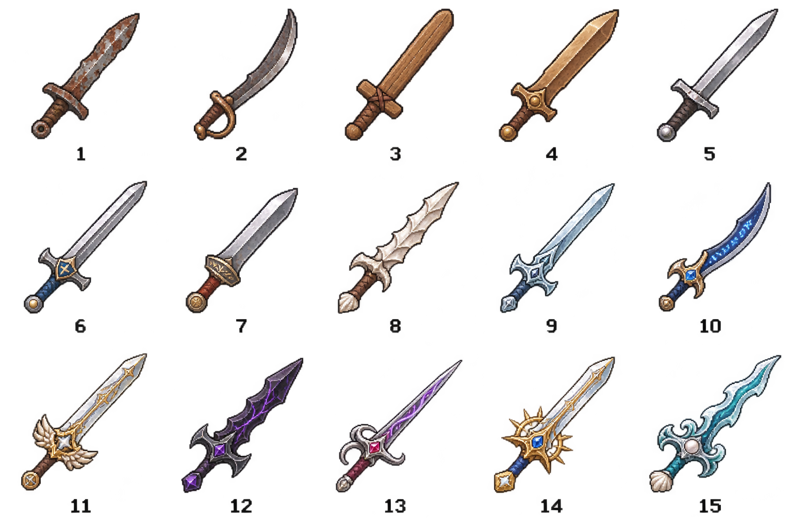
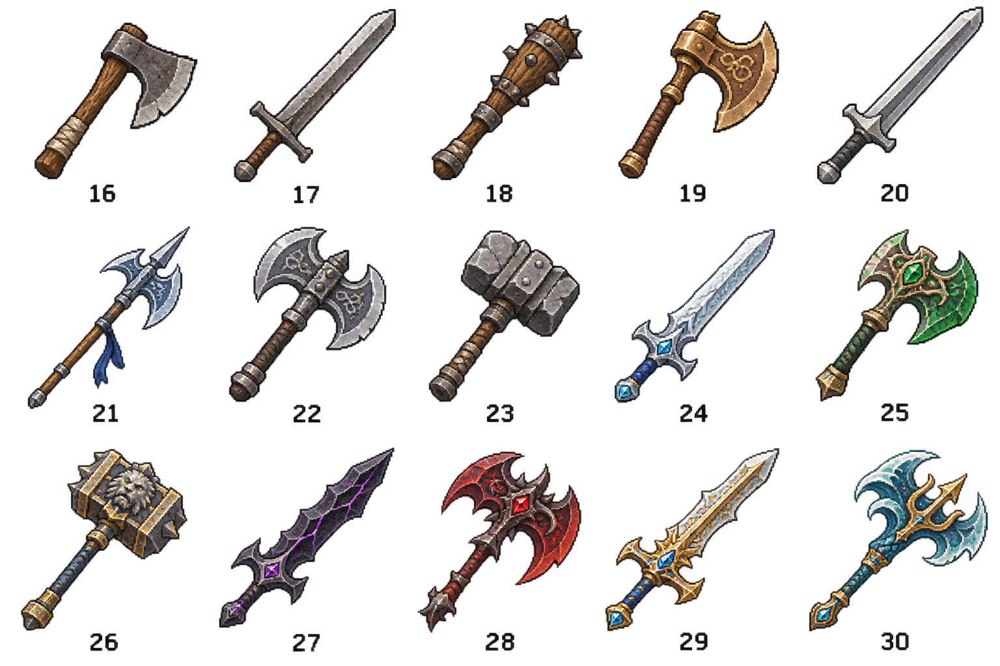
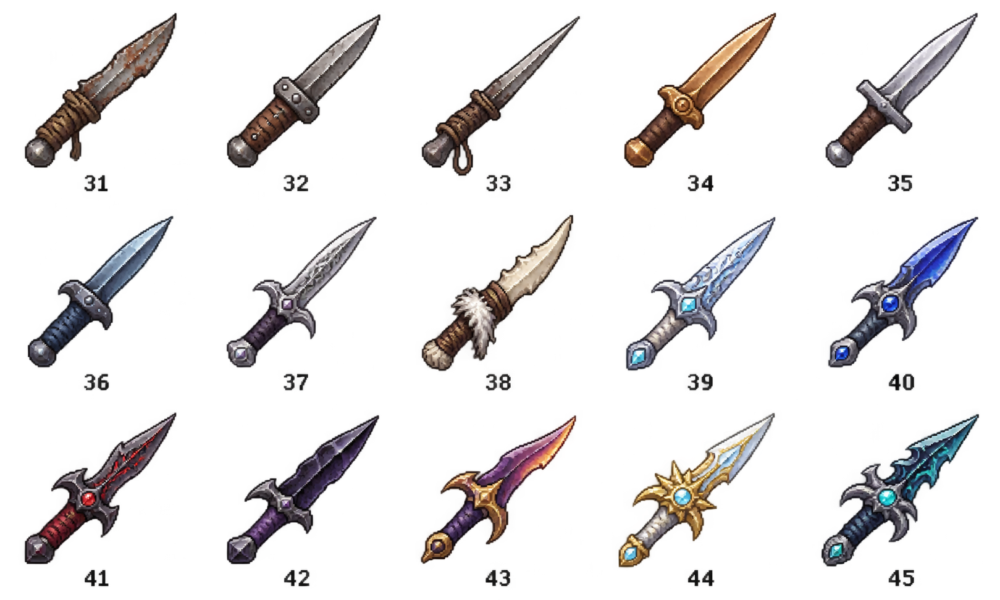
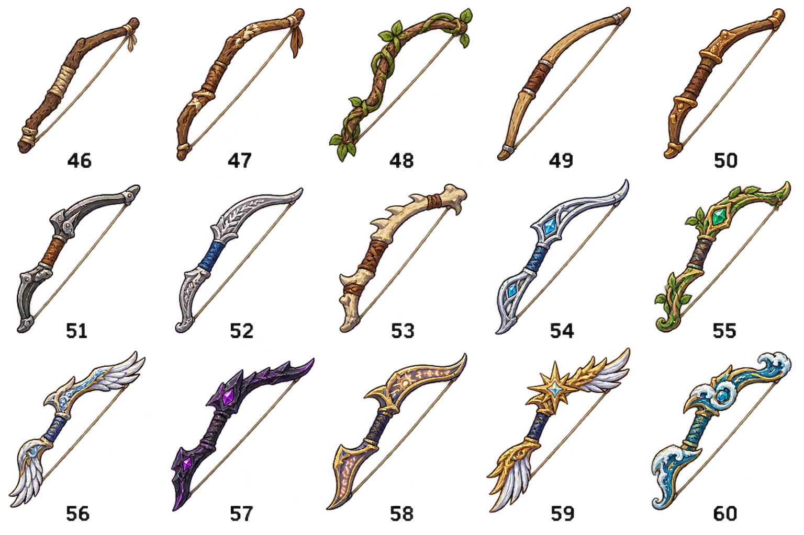
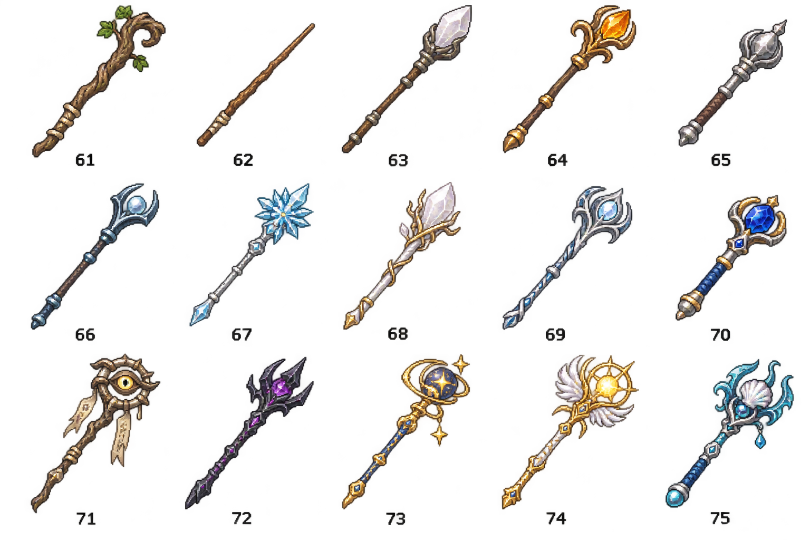
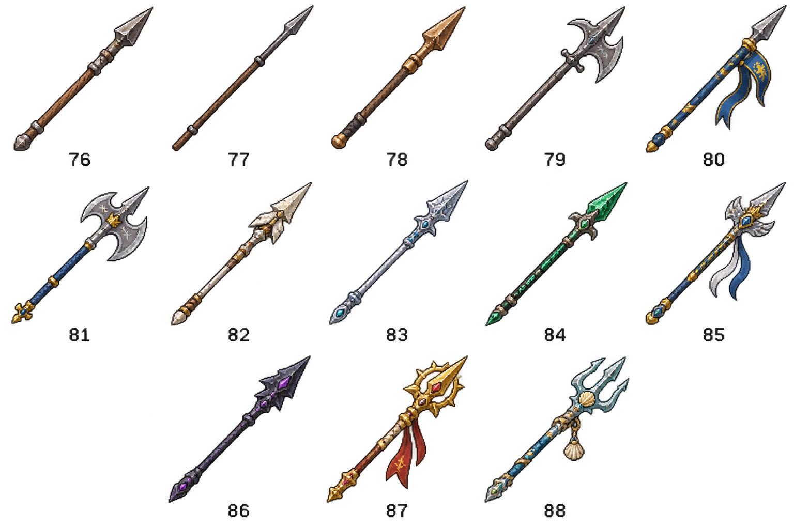
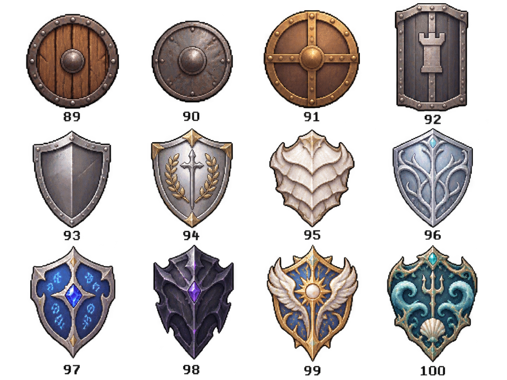

88 armas e 12 escudos. Adagas individuais, de uma mão. IDs e grades correspondem à lista fornecida.
As pranchas são imagens ampliadas, não sprites nativos de 64×64. Algumas possuem fundo.

| ID | Nome | Grade |
|---|---|---|
| 001 | Espada Curta Enferrujada | No-Grade |
| 002 | Sabre de Ferro Velho | No-Grade |
| 003 | Espada de Treino da Guarda | No-Grade |
| 004 | Espada Larga de Bronze | D |
| 005 | Lâmina Polida de Aço | D |
| 006 | Espada Longa do Cavaleiro | C |
| 007 | Gládio de Aço Temperado | C |
| 008 | Lâmina de Carapaça Branca | C |
| 009 | Espada de Mithril | B |
| 010 | Sabre Rúnico de Safira | B |
| 011 | Lâmina do Guardião do Santuário | B |
| 012 | Espada de Obsidiana | A |
| 013 | Lâmina Arcana do Duelo | A |
| 014 | Espada Real Celestial | S |
| 015 | Soberana das Marés | S |

| ID | Nome | Grade |
|---|---|---|
| 016 | Machado de Lenhador | No-Grade |
| 017 | Montante de Ferro Bruto | No-Grade |
| 018 | Clava Reforçada | No-Grade |
| 019 | Machado de Batalha de Bronze | D |
| 020 | Espadão de Aço Simples | D |
| 021 | Alabarda de Aço Azul | C |
| 022 | Machado Duplo Temperado | C |
| 023 | Quebra-Rochas da Pedreira | C |
| 024 | Montante de Mithril | B |
| 025 | Machado de Esmeralda Bruta | B |
| 026 | Destruidora de Colossos | B |
| 027 | Espadão de Obsidiana | A |
| 028 | Machado Carmesim do Abismo | A |
| 029 | Montante do Rei Antigo | S |
| 030 | Fúria do Leviatã | S |

| ID | Nome | Grade |
|---|---|---|
| 031 | Faca de Caça Enferrujada | No-Grade |
| 032 | Punhal de Couro e Ferro | No-Grade |
| 033 | Estilete dos Subúrbios | No-Grade |
| 034 | Adaga de Bronze Polido | D |
| 035 | Adaga de Aço | D |
| 036 | Punhal de Aço Azulado | C |
| 037 | Adaga Prateada da Sombra | C |
| 038 | Presa da Fera Branca | C |
| 039 | Adaga de Mithril | B |
| 040 | Adaga de Safira Sombria | B |
| 041 | Lâmina do Nêmesis | B |
| 042 | Adaga de Obsidiana | A |
| 043 | Garra do Crepúsculo | A |
| 044 | Adaga Celestial do Silêncio | S |
| 045 | Presa Abissal | S |

| ID | Nome | Grade |
|---|---|---|
| 046 | Arco Curto de Madeira Seca | No-Grade |
| 047 | Arco de Caça Rústico | No-Grade |
| 048 | Arco Improvisado de Cipó | No-Grade |
| 049 | Arco Longo de Freixo | D |
| 050 | Arco Reforçado de Bronze | D |
| 051 | Arco Composto de Aço | C |
| 052 | Arco Prateado da Patrulha | C |
| 053 | Arco de Osso da Pedreira | C |
| 054 | Arco Élfico de Mithril | B |
| 055 | Arco de Esmeralda do Bosque | B |
| 056 | Arco dos Ventos do Santuário | B |
| 057 | Arco de Obsidiana | A |
| 058 | Arco Rúnico do Horizonte | A |
| 059 | Arco Celestial do Reino | S |
| 060 | Arco das Tormentas Marinhas | S |

| ID | Nome | Grade |
|---|---|---|
| 061 | Cajado de Carvalho Velho | No-Grade |
| 062 | Varinha de Aprendiz | No-Grade |
| 063 | Bastão de Cristal Opaco | No-Grade |
| 064 | Cajado de Bronze e Âmbar | D |
| 065 | Cetro de Aço Polido | D |
| 066 | Cajado de Aço Azulado | C |
| 067 | Bastão Prateado de Gelo | C |
| 068 | Cajado de Quartzo Branco | C |
| 069 | Cajado de Mithril | B |
| 070 | Cetro de Safira Arcana | B |
| 071 | Cajado do Oráculo Antigo | B |
| 072 | Cajado de Obsidiana | A |
| 073 | Bastão Astral de Filigrana | A |
| 074 | Cajado Celestial Supremo | S |
| 075 | Cetro do Abismo Oceânico | S |

| ID | Nome | Grade |
|---|---|---|
| 076 | Lança de Madeira e Ferro | No-Grade |
| 077 | Pique de Milícia | No-Grade |
| 078 | Lança Curta de Bronze | D |
| 079 | Partasana de Aço | D |
| 080 | Lança de Cavalaria Azul | C |
| 081 | Alabarda Prateada Real | C |
| 082 | Lança de Carapaça Branca | C |
| 083 | Lança de Mithril | B |
| 084 | Pique Rúnico de Esmeralda | B |
| 085 | Lança do Guardião da Região | B |
| 086 | Lança de Obsidiana | A |
| 087 | Lança Dourada da Ordem | S |
| 088 | Tridente do Colossal do Mar | S |

| ID | Nome | Grade |
|---|---|---|
| 089 | Escudo Redondo de Madeira | No-Grade |
| 090 | Broquel de Ferro Velho | No-Grade |
| 091 | Escudo de Bronze Reforçado | D |
| 092 | Escudo Torre de Aço | D |
| 093 | Escudo de Aço Temperado | C |
| 094 | Escudo Prateado do Guarda | C |
| 095 | Égide de Carapaça Branca | C |
| 096 | Escudo de Mithril | B |
| 097 | Escudo Rúnico de Safira | B |
| 098 | Escudo de Obsidiana | A |
| 099 | Baluarte Celestial do Reino | S |
| 100 | Égide das Profundezas | S |